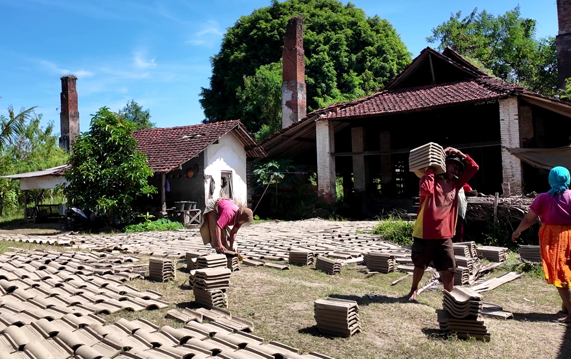

Genteng Sokka
Warisan: Kerajinan Tanah Liat
Kualitas & Tradisi Tanah Liat
Industri Genteng Sokka tidak lepas dari keahlian dasar masyarakat Kebumen dalam mengolah tanah liat. Jauh sebelum industri genteng muncul pada tahun 1920-an, warga setempat telah lebih dulu memiliki tradisi kuat dalam pembuatan gerabah yang sangat fungsional.
Penelitian sejarah menunjukkan bahwa tanah di wilayah ini memang memiliki potensi besar sebagai bahan bangunan berkualitas, yang akhirnya menjadi fondasi bagi lahirnya merek legendaris Genteng Sokka.
Warisan Gerabah Gebangsari
Sebelum abad ke-20, masyarakat Gebangsari, Kecamatan Klirong telah ahli membuat alat rumah tangga (tungku, gentong, padasan, blengker, jambangan, kendil, cowek, jubek). Keahlian turun-temurun ini konon merupakan hasil interaksi dengan kebudayaan China.
Riset Kolonial Belanda
Pada tahun 1920-an, Pemerintah Kolonial Belanda melalui Balai Keramik di Bandung melakukan pemetaan daerah yang memiliki tanah bagus untuk bahan atap. Kebumen pun diakui sebagai salah satu daerah dengan potensi sentra genteng terbaik.
Kualitas & Jenis Genteng
Kualitas Genteng Sokka sangat diakui hingga dulu digunakan untuk atap pabrik-pabrik gula di seluruh Jawa. Kini, genteng Sokka memiliki banyak varian (seperti Plentong, Morando, dan Kerepus) dengan harga terjangkau namun mutu tetap prima.
Dengarkan Cerita Budaya
Kisah Tanah Liat Sokka
Data Warisan Industri Sokka
Pusat Gerabah Awal
Gebangsari, Klirong
Bahan Baku Utama
Lempung Aluvial
Lokasi Pabrik Pertama
Kedawung, Pejagoan
Varian Genteng
Plentong, Morando, Kerepus
Langkah 1: Riset Kolonial (1920)
Balai Keramik Bandung & H. Ahmad
Tahun 1920-an, kolonial Belanda membentuk Balai Keramik di Bandung untuk memetakan tanah bahan atap. Kebumen terbukti sangat potensial. Orang Jawa pertama yang membuat kerajinan genteng manual di sana adalah H. Ahmad, yang menjadi cikal bakal industri ini.
Langkah 2: Revolusi Mesin Jerman
Pabrik "AB Sokka" H. Abu Ngamar
H. Abu Ngamar (putra H. Ahmad) mendirikan pabrik berjarak 200m dari Stasiun Sokka. Atas bantuan kawannya, seorang guru teknik Belanda, didatangkanlah mesin dari Jerman. Merek "AB Sokka" pun lahir dan banyak digunakan untuk atap pabrik gula di seluruh Jawa.
Langkah 3: Situs Sejarah
Lima Cerobong Asap Kedawung
Sampai saat ini, di Dusun Sokka, Desa Kedawung, Pejagoan masih dapat ditemui 5 cerobong pembakaran genteng tua serta sisa rel dari dalam pabrik menuju Stasiun Sokka. Kualitas dan jenis genteng (Plentong, Morando, dll) kini terus dilestarikan dengan harga terjangkau.
Tantangan Lencana
Uji pengetahuanmu dengan 10 pertanyaan seputar Genteng Sokka dan dapatkan lencana eksklusif untuk Geo-Passport milikmu!
Pelestari Budaya Geopark


© 2026 Badan Pengelola Kebumen Geopark